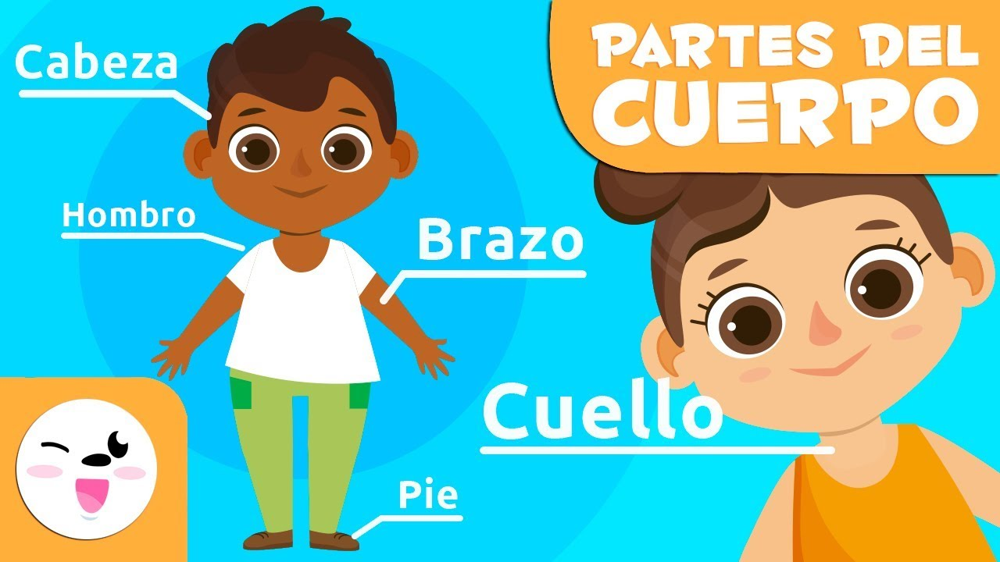

VIDEOS PARA NIÑOS DE 4 A 7 AÑOS
En esta etapa, los niños continúan explorando la música de manera activa. Desarrollan habilidades motoras más finas y coordinación, lo que les permite participar en actividades más estructuradas. Los juegos musicales, la introducción de instrumentos de percusión simples y la participación en coros o actividades grupales les brindan oportunidades para expresarse creativamente y desarrollar habilidades sociales. Además, comienzan a entender conceptos musicales básicos como ritmo, melodía y tono.
Es crucial fomentar un ambiente musical diverso para ampliar sus preferencias y capacidades auditivas. La participación en clases de música o actividades extracurriculares relacionadas con la música puede ser beneficioso para su desarrollo integral.

Cortometraje Animado: "La Aventura del Pequeño Astronauta"
Este encantador cortometraje animado sigue las aventuras de un pequeño astronauta en su viaje espacial. A través de la narrativa y la música, el video estimula la imaginación y la curiosidad de los niños. Además, promueve valores como la valentía y la exploración. Ideal para niños de 4 a 7 años que disfrutan de historias emocionantes y coloridas.
Video Educativo: "El Cuerpo Humano para Niños"
Este video educativo utiliza animaciones y personajes amigables para explorar el funcionamiento del cuerpo humano de manera divertida. A través de explicaciones sencillas, introduce a los niños de 4 a 7 años a conceptos básicos sobre órganos, sistema digestivo, sistema circulatorio, y más. El objetivo es fomentar la comprensión del cuerpo humano de una manera accesible y entretenida.

Video Musical: "Aprender los Colores con Canciones"
Este video musical presenta una divertida canción que ayuda a los niños a aprender los colores de una manera alegre y pegajosa. Utilizando animaciones coloridas y ejemplos visuales, el video refuerza el reconocimiento de colores básicos mientras invita a los niños a cantar y bailar. Es una herramienta educativa y entretenida para reforzar conceptos fundamentales.